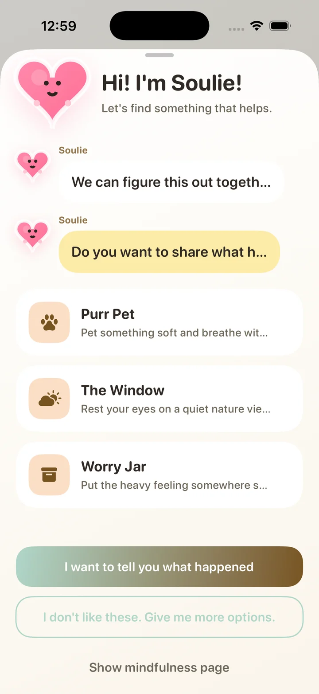
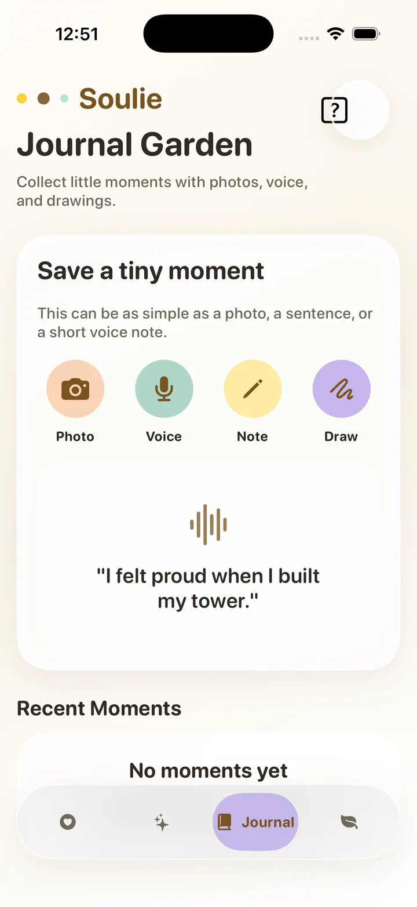
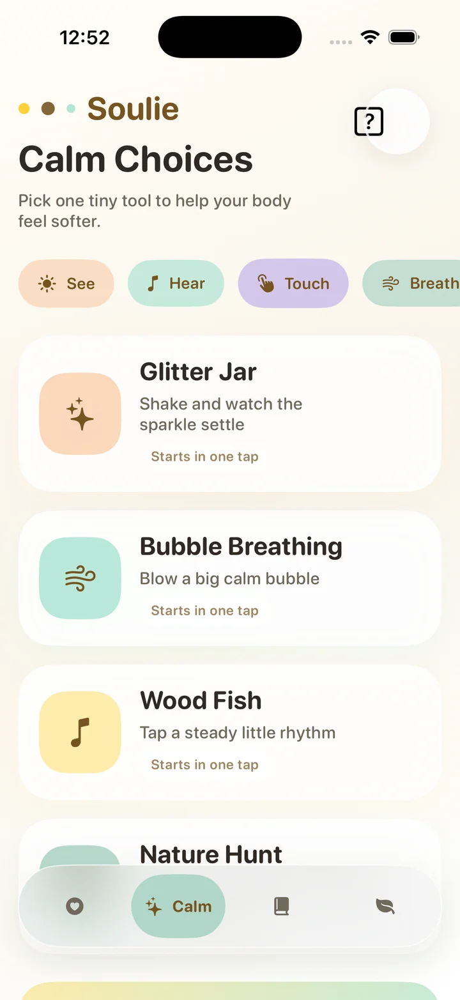
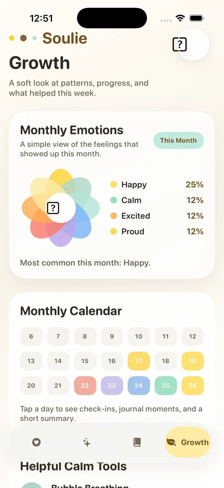

Soulie
An emotional wellness product for children and their parents.
Children ages 4 to 10 often feel more than they can name. Soulie helps them understand and express their emotions, and helps parents respond with more empathy and confidence.


- Project type
- Product development
- Year
- 2026
- Users
- Children ages 4 to 10 and parents
- My work
- Product definition, requirements, and AI-assisted prototyping
The opportunity
I saw an opportunity to help children better understand and express their emotions. Young children rarely have the words for what they feel, and the adults around them are left guessing.
Soulie works on both sides of that gap. Children get tools to notice and express what they feel. Parents get what they need to respond with greater empathy and confidence.
Defining the product
I defined primary and secondary users, the product goals, the core user journeys, and the MVP features. The MVP is built around a three-stage experience: Know Yourself, Choose Yourself, and Give Yourself.
I then wrote a product requirements document. It covers:
- User needs
- Feature architecture
- Interaction principles
- Emotional check-ins
- Self-guided support tools
- Growth journaling
- Parent-facing insights
- Privacy considerations
Inside the prototype
These screens are from the iPhone prototype I built with AI-assisted development tools, working from the requirements document.
-
Journal Garden
Save a tiny moment as a photo, a voice note, a written note, or a drawing.
-

Calm Choices
Tools are grouped by See, Hear, Touch, and Breathe. Glitter Jar, Bubble Breathing, and Wood Fish each start in one tap.
-

Growth
A flower chart of the month's emotions and a color-coded calendar. Tap a day to see check-ins, journal moments, and a short summary.
-
Soulie, the companion
A friendly heart offers a few calming choices, invites the child to share what happened, and lets them ask for different options.
Building it with AI
I used AI-assisted development tools, including OpenAI Codex, to turn the requirements into working prototype functionality. The requirements document stayed the source of truth, and I refined the product as the prototype took shape.
- Write the requirementsUsers, journeys, features, interaction principles, and privacy considerations.
- Turn them into a prototypeUse OpenAI Codex to build prototype functionality from the requirements.
- Refine and repeatIterate on product flows, features, and implementation.
Four things I balanced
Applying an education-informed perspective meant holding four needs in tension throughout product planning. Each one is a question I kept asking, and you can see the answers in the screens above.
Child usability
Can a child use this without help?
In the prototype: short instructions on every screen, like "Pick one tiny tool," and tools that start in one tap.
Developmental appropriateness
Does it fit what a 4-year-old and a 10-year-old can understand?
In the prototype: calming tools are organized by the senses and have playful names like Glitter Jar and Wood Fish.
Caregiver needs
Does it give parents something useful to act on?
In the prototype: the Growth view shows monthly patterns and what helped, and the requirements include parent-facing insights.
User agency
Does the child stay in charge of their own choices?
In the prototype: the child picks their own tool, and can say "I don't like these" to get more options.
Why an educator built this
I work in a kindergarten classroom, and I studied early childhood education at Teachers College, Columbia University. Watching how young children show feelings before they can explain them shaped how I planned Soulie. It's also why I'm moving into product management: I want to build for the people I've spent my career learning from.
Questions about Soulie, or want to talk product?
I'm looking for product management and tech internships. I'd be glad to hear from you.